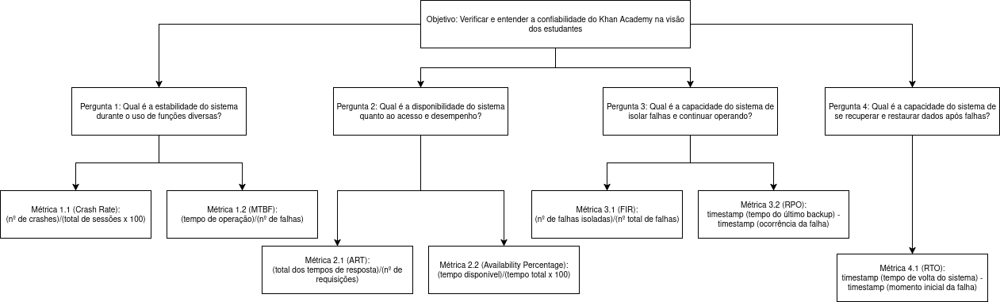

Confiabilidade
Objetivo de Medição 2: Confiabilidade¶
| Analisar | o Khan Academy |
|---|---|
| Para o propósito de | Verificar e entender |
| Com respeito a | Confiabilidade |
| Do ponto de vista da | Comunidade de estudantes |
| No contexto da | Disciplina de Qualidade de Software 1 (FCTE - UnB) |
Perguntas e Hipóteses de Medição¶
Questão 1: Maturidade
Qual é a estabilidade do sistema durante o uso de funções diversas?
- Hipótese 1.1 (H1.1): O Crash Rate (CR) por sessão de usuário na plataforma (web e mobile) será, em média, inferior a 0.15%.
- Hipótese 1.2 (H1.2): O Mean Time Between Failure (MTBF) do serviço principal será superior a 30 horas de operação contínua antes de uma falha.
Questão 2: Disponibilidade
Qual é a disponibilidade do sistema quanto ao acesso e desempenho?
- Hipótese 2.1 (H2.1): O Average Response Time (ART) para ações críticas do usuário (início de vídeo ou exercício) será, em média, de até 1 segundo.
- Hipótese 2.2 (H2.2): O Availability Percentage para o sistema deverá ser maior ou igual a 99%, ou seja, o mesmo não deve ficar fora do ar por mais que 87.6 horas ao ano.
Questão 3: Tolerância a Falhas
Qual é a capacidade do sistema de isolar falhas e continuar operando?”
- Hipótese 3.1 (H3.1): O Fault Isolation Rate (FIR) será de, no mínimo, 90% para falhas não-críticas, permitindo que o usuário continue navegando.
- Hipótese 3.2 (H3.2): O Recovery Point Objective (RPO) será de, no máximo, 5 minutos, garantindo que a perda de dados ou progresso do aluno em caso de falha seja mínima e aceitável.
Questão 4: Recuperabilidade
Qual é a capacidade do sistema de se recuperar e restaurar dados após falhas?
- Hipótese 4.1 (H4.1): O Recovery Time Objective (RTO) para restaurar a funcionalidade total do sistema será de, no máximo, 5 minutos.
Seleção das Métricas¶
Questão 1: Maturidade
- Métrica 1.1: Crash Rate (CR)
- Definição: Percentual de sessões de usuário que terminam em crash.
- Fórmula: \(CR = \frac{Número\ de\ Crashes}{Número\ Total\ de\ Sessões} \times 100\%\)
- Coleta:
- Serão registrados os casos de
crash, ou seja, quando o sistema ficou inutilizável e foi necessário recarregamento.
- Serão registrados os casos de
- Pontuação de Julgamento:
| Bom | Regular | Insatisfatório |
|---|---|---|
| \(\leq 0.15\%\) | 0.16% a 0.5% | \(> 0.5\%\) |
Justificativa: O Crash Rate é um indicador direto da estabilidade da plataforma. O Khan Academy apresenta uma média de 4.5 estrelas nas plataformas e, de acordo com Pratik Patel, tais aplicações apresentam \(CR = ~00.15\%\).
Propósito Garantir uma experiência de usuário fluida, minimizando interrupções abruptas que prejudicam o foco no aprendizado.
- Métrica 1.2: Mean Time Between Failure (MTBF)
- Definição: Tempo médio de operação do sistema entre falhas.
- Fórmula: \(MTBF = \frac{Tempo\ Total\ de\ Operação}{Número\ de\ Falhas}\)
- Coleta:
- Um membro deverá registrar as falhas encontradas e o tempo total de uso.
- Pontuação de Julgamento:
| Bom | Regular | Insatisfatório |
|---|---|---|
| \(\geq 30\) horas | 30 a 29 horas | \(< 30\) horas |
Justificativa: Não foram encontradas referências que justifiquem as 30h, visto que o ideal o MTBF é ser o maior possível, tendendo até mesmo ao infinito no mundo ideal. O MTBF é crucial para medir a confiabilidade operacional de longo prazo.
Propósito A equipe entendeu 30h entre falhas para um estudante é aceitável, tendo em vista que o mesmo utilizará o sistema por no máximo 4 horas diárias. Sobre MTBF: Incident management for high-velocity teams
Questão 2: Disponibilidade
- Métrica 2.1: Average Response Time (ART)
- Definição: Tempo médio de resposta do sistema a requisições críticas.
- Fórmula: \(ART = \frac{\sum\ de\ Tempos\ de\ Resposta}{Número\ Total\ de\ Requisições}\)
- Coleta:
- Automatizado, vamos deixar um computador realizando requisições para o sistema de forma periódica.
- Após coletar entre 900 e 1100 requisições o valor será calculado.
- Pontuação de Julgamento:
| Bom | Regular | Insatisfatório |
|---|---|---|
| \(\leq 1\) segundo | 1.1 a 3 segundos | \(> 3\) segundos |
Justificativa: Um tempo de resposta de até 1 segundo para ações críticas é fundamental para a usabilidade e satisfação do estudante, evitando frustração e abandono da plataforma.
Propósito Assegurar que o sistema oferece um desempenho aceitável para o usuário final em ações críticas (início de vídeo ou exercício).
- Métrica 2.2: Availability Percentage
- Definição: Quanto tempo do total um sistema está operacional e pronto para uso.
- Fórmula: \(AP = \frac{Total\ Available\ Time}{Total\ Possible\ Time \times 100}\)
- Coleta:
- Será realizada uma pesquisa para saber se nos últimos meses houve uma queda do Khan Academy.
- Pontuação de Julgamento:
| Bom | Regular | Insatisfatório |
|---|---|---|
| \(\ge 99\%\) | \(99\%\) a \(98\%\) | \(\lt 98\%\) |
Justificativa: Apesar de não encontramos uma recomendação direta de qual seria o Availability Percentage ideal para sistemas de educação como o Khan Academy, foi entendido a partir de pesquisas, que 99% é o padrão de qualidade do mercado para sistemas de software em geral.
Propósito Confirmar que o Khan Academy está acessível de forma consistente, garantindo que o sistema não fique fora do ar por mais que 87.6 horas ao ano.
Questão 3: Tolerância a Falhas
- Métrica 3.1: Fault Isolation Rate (FIR)
- Definição: Avalia a capacidade de isolar a causa raiz de uma falha em um componente.
- Fórmula: \(FIR = \frac{Número\ de\ Falhas\ Corretamente\ Isoladas}{Número\ Total\ de\ Falhas\ Detectadas}\)
- Coleta:
- Manual a partir de logs e métricas de observabilidade (ex: error tracing, health checks).
- Pontuação de Julgamento:
| Bom | Regular | Insatisfatório |
|---|---|---|
| $ < 92\%$ | 90% a 94% | $ > 90\%$ |
Justificativa: O Fault Isolation Rate é fundamental para medir a resiliência operacional do sistema. Um alto FIR indica que o sistema consegue isolar falhas localizadas, evitando que problemas em um módulo afetem o restante da aplicação — característica essencial em ambientes com alta disponibilidade, como plataformas educacionais online.
Propósito Identificar fragilidades de arquitetura e pontos de acoplamento excessivo
- Métrica 3.2: Recovery Point Objective (RPO)
- Definição: Tempo máximo aceitável entre o último ponto de salvamento consistente e o momento de uma falha.
- Fórmula: \(RPO = \text{Timestamp (Tempo entre o último backup)} - \text{Timestamp (ocorrência da falha)}\)
- Coleta:
- Observar logs de transações, backups e sincronizações automáticas de dados.
- Pontuação de Julgamento:
| Bom | Regular | Insatisfatório |
|---|---|---|
| \(\leq 5\) minutos | 6 a 15 minutos | \(> 15\) minutos |
Justificativa: O RPO é uma métrica para avaliar a eficiência dos mecanismos de backup e replicação de dados. Mede a capacidade do sistema de minimizar perdas de informação em caso de falhas inesperadas, assegurando continuidade do aprendizado e confiança do usuário.
Propósito Garantir que a perda de dados ou progresso do aluno em caso de falha seja mínima e aceitável.
Questão 4: Recuperabilidade
- Métrica 4.1: Recovery Time Objective (RTO)
- Definição: Tempo máximo aceitável para restaurar a funcionalidade total.
- Coleta:
- Manual a partir de logs de incidentes.
- Pontuação de Julgamento:
| Bom | Regular | Insatisfatório |
|---|---|---|
| \(\leq 5\) minutos | 6 a 60 minutos | \(> 60\) minutos |
Justificativa: O RTO mede a rapidez com que o sistema consegue retornar à operação normal. A meta de 5 minutos é crucial para um serviço educacional, minimizando o tempo de indisponibilidade e o impacto no cronograma de estudos.
Propósito Assegurar que a funcionalidade total do sistema seja restaurada rapidamente, minimizando a interrupção do serviço para a comunidade de estudantes, e garantindo que o RPO de Preservação do progresso do aluno (salvamento de dados) seja, no máximo, de 5 minutos.
Critérios para Julgamento (Confiabilidade)¶
- Aceitável: \(\geq 70\%\) das métricas classificadas como "Bom".
- Parcialmente Aceitável: Entre \(40\%\) e \(69\%\) das métricas com nível "Regular" ou superior.
- Inaceitável: \(> 30\%\) das métricas atingindo o nível "Insatisfatório".
Relação entre Confiabilidade, Perguntas e Métricas¶
| Questão | Métricas Simplificadas | Tipo de Coleta |
|---|---|---|
| Maturidade Qual é a estabilidade do sistema durante o uso de funções diversas? |
- Mean Time Between Failure (MTBF) (horas) - Crash Rate (CR) (%) | - Manual (registro de falhas e tempo total de uso pelos membros da equipe) - Manual (registro de *crashes* e total de sessões pelos membros da equipe) |
| Disponibilidade Qual é a disponibilidade do sistema quanto ao acesso e desempenho? |
- Average Response Time (ART) (segundos) - Availability Percentage (AP) (%) | - Automatizada (requisições periódicas ao sistema) - Híbrida (pesquisa histórica e `pings` periódicos ao sistema) |
| Tolerância a Falhas Qual é a capacidade do sistema de isolar falhas e continuar operando? |
- Fault Isolation Rate (FIR) (%) - Recovery Point Objective (RPO) (minutos) | - Manual (análise de logs e métricas de observabilidade de falhas) - Manual (análise de logs de transações, backups e sincronizações) |
| Recuperabilidade Qual é a capacidade do sistema de se recuperar e restaurar dados após falhas? |
- Recovery Time Objective (RTO) (minutos) | - Manual (análise de logs de incidentes) |
Diagrama GQM - Confiabilidade (Representação Estrutural)¶
